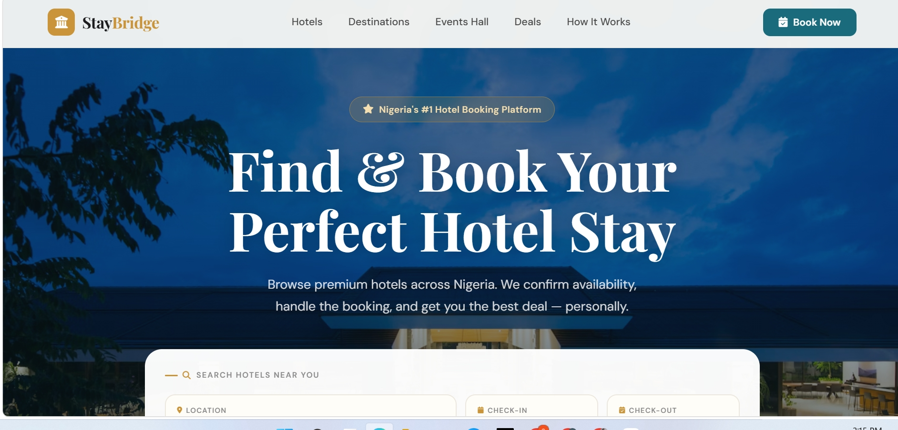
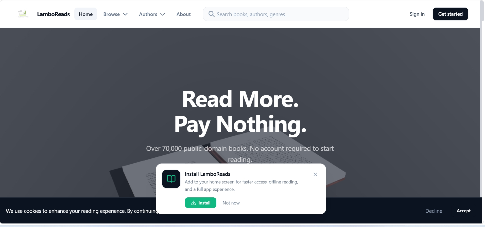
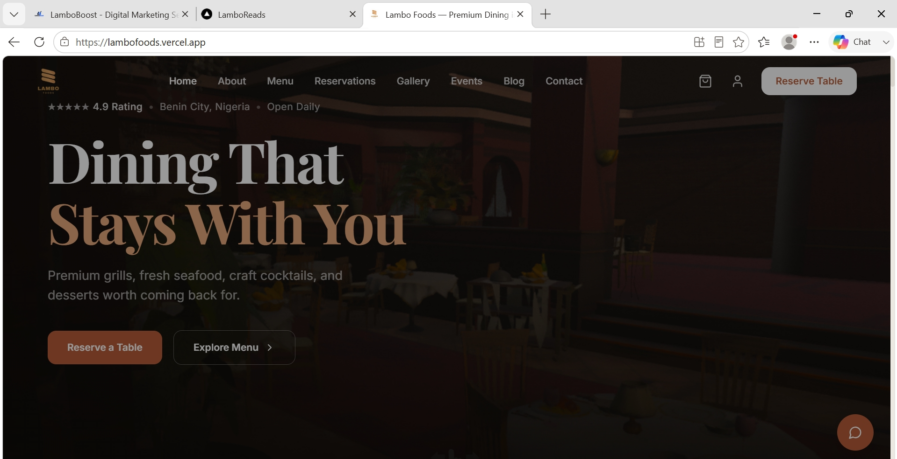
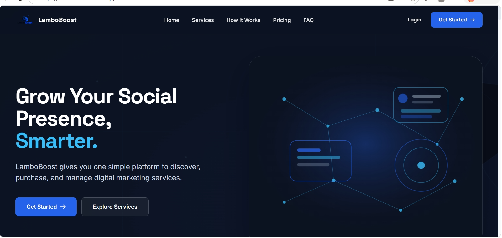

Website
StayBridge
A hotel booking platform for discovering and booking hotels across Nigeria, with search, booking requests and WhatsApp integration.
View ProjectI'm Omoruyi Isaiah, the developer behind Lambo Code. I design and build modern websites and web applications for businesses, organizations and brands — from first concept to live deployment.
"I've always been drawn to technology — not just how things are built, but how they can solve real problems."
That curiosity led me to web development, where I started learning HTML and CSS and quickly moved into building full-stack applications. What I enjoy most is understanding a business and then building something that makes it work better online.
A restaurant that needs an ordering system. A brand that needs a clean, credible website. A business that needs a custom platform to manage its operations. These are the kinds of problems I like solving.
Through Lambo Code, I work with businesses, restaurants, brands and organizations. My focus is on building products that are not only visually clean but actually useful — fast, responsive, secure and easy to maintain.
I'm equally interested in frontend and backend development. On the frontend, I care about layout, typography, responsiveness and how something feels to use. On the backend, I care about authentication, data integrity, APIs and building systems that scale as a business grows.
That's what Lambo Code is about: building things that work, solving problems that matter, and helping businesses establish themselves online with something professional and reliable.
Digital products that serve a clear purpose — from business websites to full-stack web applications.
Modern websites designed around the goals of a business — built to look professional and drive real results.
Online stores with product catalogues, shopping carts, checkout flows and payment integrations.
Custom applications with authentication, dashboards, databases and business logic built around real workflows.
Larger systems that connect users, content, data and business processes into a single product.
Clean, responsive and search-engine-friendly implementations that help businesses get found online.
I choose tools based on what each project needs. These are the technologies I have worked with across different projects.
A clear, organized process that keeps every project focused on solving the right problem.
I first understand the business, audience, goals and problem the product needs to solve.
I define the structure, functionality and user experience before development.
I create a clear interface that fits the brand and makes the product easy to use.
I develop the product using the technologies that best fit the requirements.
I test responsiveness, functionality, navigation, forms, performance and important edge cases.
I deploy the project and continue improving it when needed.
These are the standards I hold myself to on every project I build.
People should immediately understand how to use the product.
Websites should load quickly and feel responsive.
The experience should work properly across phones, tablets and desktops.
The codebase should remain organized and maintainable.
Authentication, data and application functionality should be handled responsibly.
A website should do more than look good — it should solve a real problem.
Real projects, each designed and developed from the ground up.

A hotel booking platform for discovering and booking hotels across Nigeria, with search, booking requests and WhatsApp integration.
View Project
An online reading platform built for discovering books, reading digital content and continuing a personalized reading experience.
View Project
A restaurant website designed around menu discovery, food presentation, customer contact and online ordering.
View Project
An online social media marketing platform focused on helping businesses manage and grow their social presence.
View Project
Full-stack restaurant application with real-time order management, push notifications, payment integration and admin dashboard.
View ProjectGood development isn't just about writing clean syntax or choosing the right framework. It's about understanding people, understanding businesses, and building something that actually makes a difference.
When I'm not building websites, I'm learning — reading about new tools, experimenting with projects, and thinking about how technology can solve the next problem. That curiosity is what drives every project I take on.
Let's build something useful, professional and built around your goals.
Always here to help